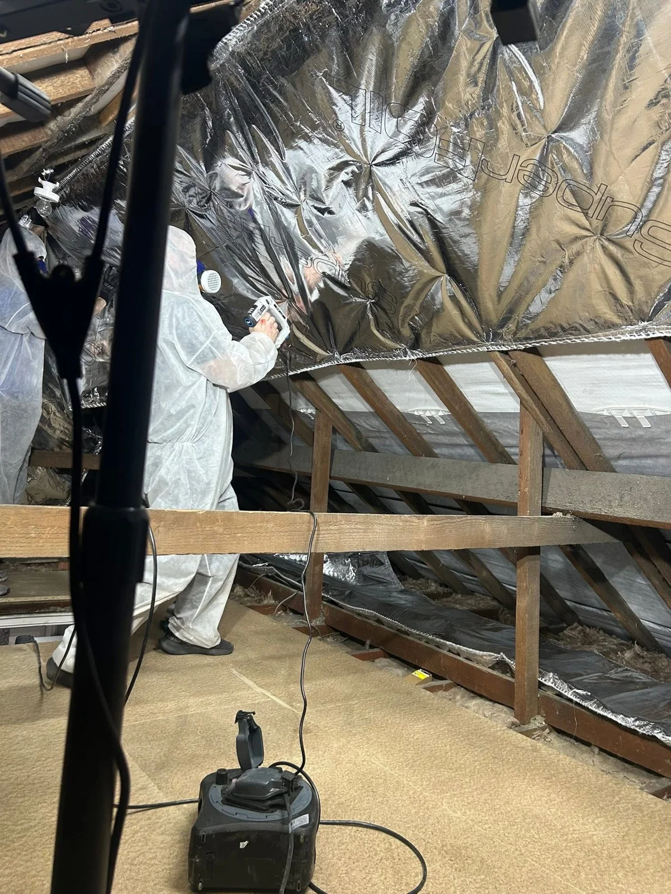
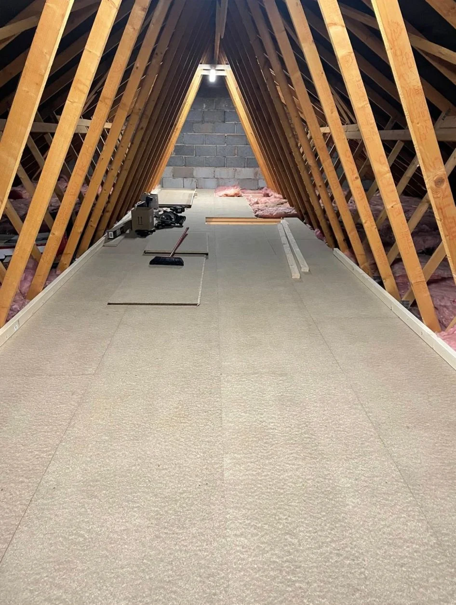
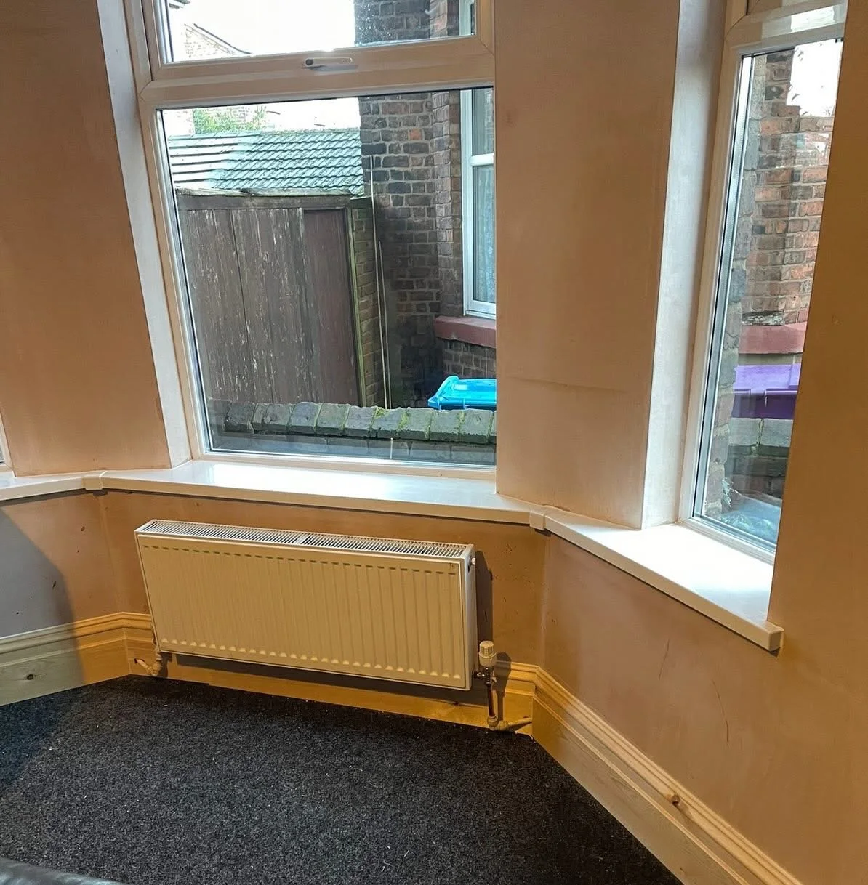

Tell us what feels cold
Send your postcode and tell us about the loft, walls or rooms you want to improve.
JDR WARMER SOLUTIONS
Loft, roof and wall insulation for a warmer home. From a single room to a whole-house upgrade, start with a free assessment.
FIND THE RIGHT IMPROVEMENT
Explore JDR’s four core services, or ask us where to start.

Keep more heat in the rooms below.
Loft insulation details
Make room for practical loft storage.
Loft boarding details
Improve cold external walls from inside.
Explore internal wall insulation
Improve comfort in rooms under the roof.
Explore room-in-roof insulationFEATURED PROJECT
Two stages of the same loft room: insulation fitted around the window, then the membrane fitted over it.

JDR PROJECT GALLERY
GOOGLE CUSTOMER REVIEWS
“The team did a neat, professional job and left everything tidy afterwards.”
“Really good bunch of guys, completed insulation works as they said they would and left the site clean…”
“Really great lads. Went out of their way to help me. Lined all of our stairs and landing and hallway.”
HOW IT WORKS
Send your postcode and tell us about the loft, walls or rooms you want to improve.
JDR checks the areas you’re concerned about and explains which improvements suit the property.
Review the recommended work and pricing before deciding whether to go ahead.
HEATING & SOLAR
JDR also offers boiler replacements, combi swaps, air source heat pumps and solar panel installations. Ask about these alongside insulation if you’re planning a wider upgrade.
Ask about heating or solarCOMMON QUESTIONS
Tell us what’s already fitted. Photos of the loft and access hatch are useful if you can take them safely.
Yes. Tell us how you plan to use the loft so we can discuss insulation and storage together.
We cover the North West. Send your postcode so we can confirm availability.
GET STARTED
Tell us what you’ve noticed. We’ll help you work out what to look at first.
Request a free assessment